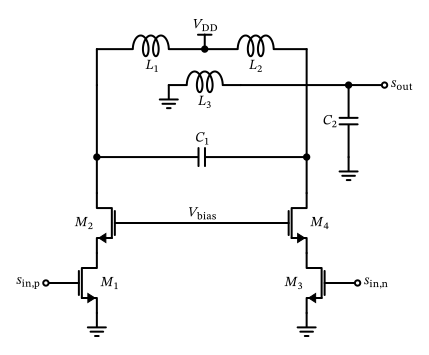
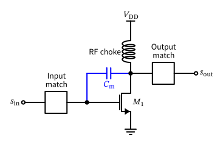
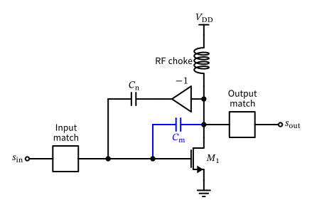

Radio-Frequency Integrated Circuits
Figure 99: A basic single stage single-ended common-source power amplifier with input and output matching.
\[ P_\mathrm{out,max} = \frac{V_\mathrm{DD}^2}{2 R_\mathrm{L}}. \]
Figure 100: A basic two-stage single-ended common-source power amplifier with input and output matching.
\[ \eta = \frac{P_\mathrm{out}}{P_\mathrm{dc}} \]
\[ \text{PAE} = \frac{P_\mathrm{out} - P_\mathrm{in}}{P_\mathrm{dc}} \]
\[ y(t) = A[r(t)] \cos\{ \omega_0 t + \psi(t) + \varphi[r(t)] \} \]
\[ A(r) = \frac{\alpha_1 r}{1 + \beta_1 r^2} \quad \text{and} \quad \varphi(r) = \frac{\alpha_2 r^2}{1 + \beta_2 r^2} \]

Figure 101: A generic differential power amplifier with cascode stages for peak voltage handling.
| Class | Conduction Angle | Efficiency | Linearity | Description |
|---|---|---|---|---|
| A | 360° | Low | High | Bias current is larger than peak output current |
| B | 180° | Medium | Medium | Conducts half the cycle (zero bias current) |
| AB | 180°-360° | Medium | Medium-high | Between A and B (a little bit of bias current) |
| C | <180° | High | Low | Conducts less than half the cycle |
| D | N/A | Very high | Low-high | Switching amplifier, uses PWM or similar |
| E | N/A | Very high | Low | Switching amplifier with tuned load |
| F | N/A | Very high | Low | Uses harmonic tuning for efficiency |
| G | N/A | Very high | Medium | Multi-level supply voltage for efficiency |
| H | N/A | Very high | Medium | Adaptive supply voltage for efficiency |

Figure 102: A basic single stage single-ended common-source power amplifier showing the Miller capacitance \(C_\mathrm{m}\) between input and output (in blue).

Figure 103: A basic single stage single-ended common-source power amplifier showing the Miller capacitance \(C_\mathrm{m}\) between input and output (in blue) and the neutralization capacitor \(C_\mathrm{n}\).
Figure 104: A generic differential power amplifier with neutralization for wideband operation and improved stability.